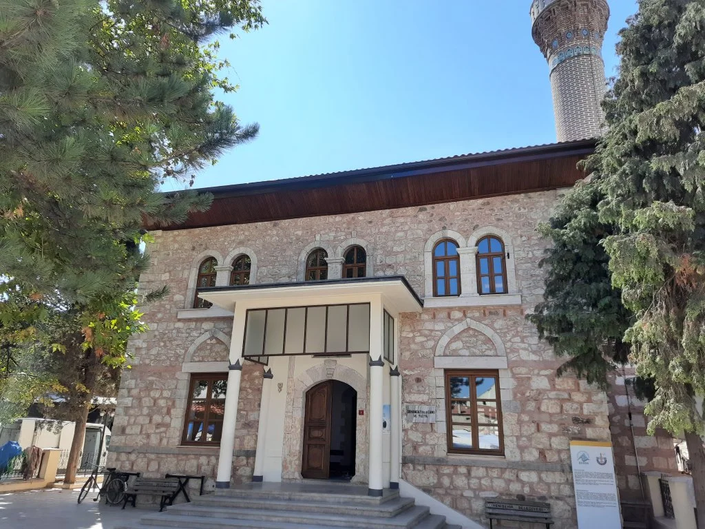
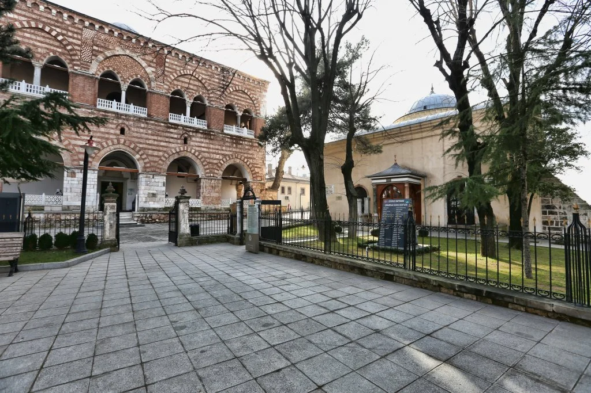
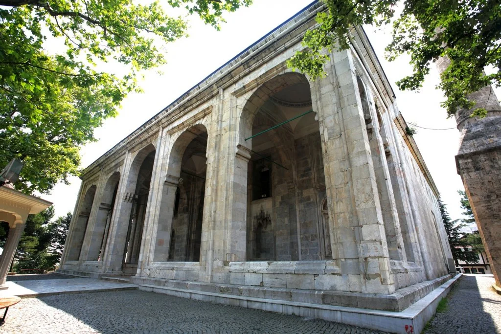
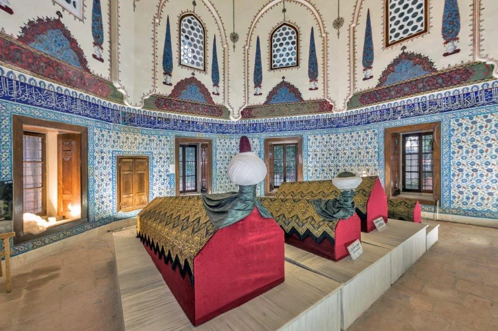

UNESCO Dünya Mirası
Bursa ve Cumalıkızık: Osmanlı İmparatorluğu'nun Doğuşu (2014)

Ticaret Merkezi
Hanlar Bölgesi
Hanlar, bedesten ve çarşılarıyla Bursa'nın tarihî ticaret merkezi.

Külliye
Orhan Gazi Külliyesi
Sultan Orhan'ın yaptırdığı, Hanlar Bölgesi'nin çekirdeğini oluşturan külliye.

Türbe
Osman Gazi ve Orhan Gazi Türbeleri
Tophane'de, Osmanlı'nın ilk iki hükümdarının türbeleri.

Külliye
Hüdavendigâr Külliyesi
I. Murad'ın Çekirge'de yaptırdığı külliye.

Külliye
Yıldırım Külliyesi
Yıldırım olarak anılan I. Bayezid'in yaptırdığı külliye.
Külliye
Yeşil Külliye
I. Mehmed'in 1414'te yaptırmaya başladığı, Yeşil Cami ve Yeşil Türbe'yi içeren külliye.

Külliye
Muradiye Külliyesi
II. Murad'ın 1425'te yaptırmaya başladığı, türbeleriyle ünlü külliye.

Köy
Cumalıkızık
Ahşap evleri ve geleneksel sokaklarıyla korunmuş Osmanlı vakıf köyü.